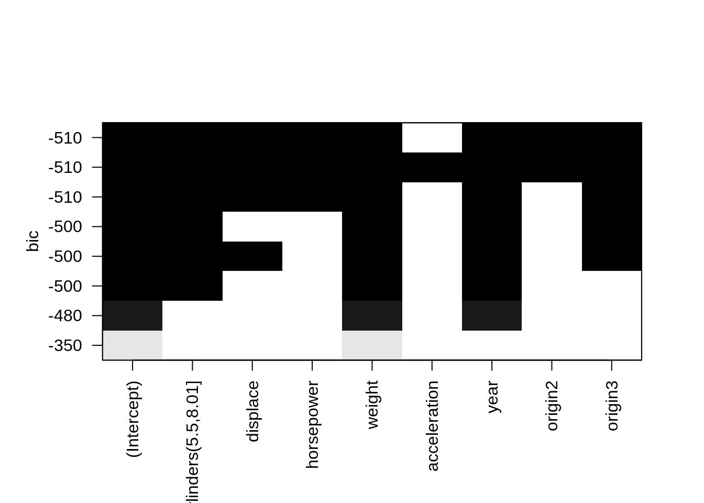
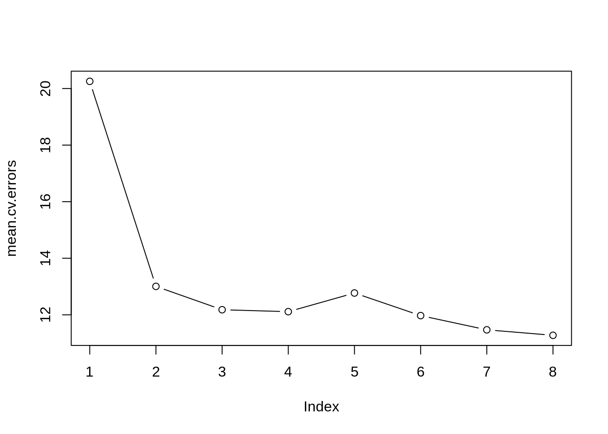
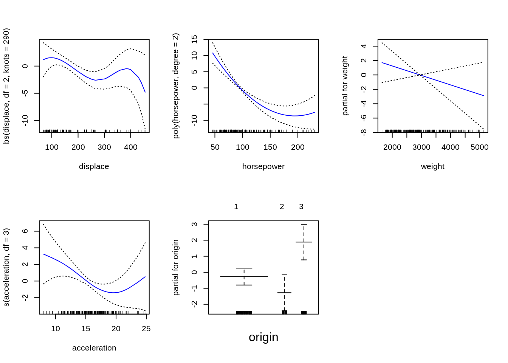

For a linear model with \(d\) possible predictors we have to consider all possible subsets of these predictors. Let \(k \in \{0, 1, 2, ..., d\}\) be the number of predictors we want to include in a linear model for our data. For a given \(k\) we have to try out all possible ways to combine \(k\) predictors among a total of \(d\), i.e. we may fit \(d \choose k\) linear models. Summing over all \(k\) we get \[ \sum_{k = 0}^d {d \choose k} = 2^d \] different linear models.
Algorithm: Best Subset
Perforimng this algorithm in R:
n = nrows(dataset)
M0 = mean(dataset) # Set M0 to sample mean
reg.fit = regsubsets(Salary ~., data = dataset) # Fit and choose best model for each k = 1, .., d
reg.summary = summary(reg.fit)
k.best = which.min(c(reg.summary$bic, ) # Choose best fit using BIC criterion
best.coef = coef(reg.fit, k.best) # Retrieve coefficients for best model (excluding null model)If we instead were using \(\text{R}^2\) to choose the best model, we would always get a model using \(d\) predictors, as RSS increases monotonically.
The models including at least one coefficient are assumed to be better than the null model, so the null model won’t be considered in the following tasks. Generally this should be compared with the best model fit.
library(ISLR)
library(leaps)
library(ggplot2)
set.seed(48)
# Load dataset
ourAuto=data.frame("mpg"=Auto$mpg,"cylinders"=factor(cut(Auto$cylinders,2)),
"displace"=Auto$displacement,"horsepower"=Auto$horsepower,
"weight"=Auto$weight,"acceleration"=Auto$acceleration,
"year"=Auto$year,"origin"=as.factor(Auto$origin))
# Split in test and training data
ntot = dim(ourAuto)[1]
set.seed(48)
testids = sort(sample(1:ntot, ceiling(0.2*ntot), replace = FALSE))
ourAutoTrain = ourAuto[-testids,]
ourAutoTest= ourAuto[testids,]
# Perform best subset on training data
res = regsubsets(mpg~., nbest=1, data=ourAutoTrain)
sumres = summary(res)
sumres## Subset selection object
## Call: regsubsets.formula(mpg ~ ., nbest = 1, data = ourAutoTrain)
## 8 Variables (and intercept)
## Forced in Forced out
## cylinders(5.5,8.01] FALSE FALSE
## displace FALSE FALSE
## horsepower FALSE FALSE
## weight FALSE FALSE
## acceleration FALSE FALSE
## year FALSE FALSE
## origin2 FALSE FALSE
## origin3 FALSE FALSE
## 1 subsets of each size up to 8
## Selection Algorithm: exhaustive
## cylinders(5.5,8.01] displace horsepower weight acceleration year
## 1 ( 1 ) " " " " " " "*" " " " "
## 2 ( 1 ) " " " " " " "*" " " "*"
## 3 ( 1 ) "*" " " " " "*" " " "*"
## 4 ( 1 ) "*" " " " " "*" " " "*"
## 5 ( 1 ) "*" "*" " " "*" " " "*"
## 6 ( 1 ) "*" "*" "*" "*" " " "*"
## 7 ( 1 ) "*" "*" "*" "*" " " "*"
## 8 ( 1 ) "*" "*" "*" "*" "*" "*"
## origin2 origin3
## 1 ( 1 ) " " " "
## 2 ( 1 ) " " " "
## 3 ( 1 ) " " " "
## 4 ( 1 ) " " "*"
## 5 ( 1 ) " " "*"
## 6 ( 1 ) " " "*"
## 7 ( 1 ) "*" "*"
## 8 ( 1 ) "*" "*"For each level of model complexity \(k\), a linear model is fitted for all \(d \choose k\) different subsets containing \(k\) predictors. The best amongst these are chosen using RSS or equivalently \(\text{R}^2\).
The best model using 2 covariates:
coef(res, id = 2)## (Intercept) weight year
## -13.646715908 -0.006755205 0.753402759ie. mpg = (-0.0065)weight + (0.7699)year.
Using RSS to choose between models of the same complexity works fine, but since RSS decreases monotonically with increasing number of predictors we need to use some other criterion to choose between models of different complexity.
Four techniques that are used to adjust the training error such that it penalizes increased model complexity are used to compare different models: Mallow’s \(C_p\), Akaike Information Criterino (AIC), Bayesion Information Criterion (BIC) and adjusted \(R^2\). These are defined in the course textbook as:
\[ C_p = \frac{1}{n}(\text{RSS} + 2d\hat \sigma^2) \] \[ \text{AIC} = \frac{1}{n\hat\sigma^2}(\text{RSS} + 2d\hat\sigma^2) \] \[ \text{BIC} = \frac{1}{n\hat\sigma^2}(\text{RSS} + \text{log}(n)d\hat \sigma^2) \] \[ \text{Adjusted } R^2 = 1-\frac{\text{RSS}/(n-d-1)}{\text{TSS}/(n-1)} \] AIC and \(C_p\) are proportional to each other, and therefore gives the same results for the best model. For \(C_p\), AIC and BIC we choose the model with the lowest value, and for adjusted \(R^2\) we choose the model with highest value.
An alternative approach is to estimate the test error for each model using cross-validation methods, and then choose the one with the lowest estimated test error. This is further explained in 1c).
According to the BIC criterion the best model in our Auto data set uses 7 predictors: All except acceleration.
#BIC plot for subsets
plot(res,scale="bic")
# Find best subset model using BIC
sumres$bic
which.min(sumres$bic)
coef(res,id=which.min(sumres$bic))## [1] -345.9393 -482.2991 -499.7315 -502.4492 -501.9509 -506.5900 -512.9862
## [8] -509.1720
## [1] 7
## (Intercept) cylinders(5.5,8.01] displace
## -16.073332968 -4.123540911 0.031204109
## horsepower weight year
## -0.043200056 -0.005739187 0.738391906
## origin2 origin3
## 2.172886347 2.950092641The most significant variable is the number of cylinders, where an increase of 1 sylinder results in a decrease of almost 4 mpg. Furthermore american cars seems to be less fuel efficients than european and japanese cars(since the origin2 and origin3 are positive). Not surprisingly, there is also a positive relation between mpg and model year, such that the newer cars are more fuel efficient.
Since R does not already contain a predict function for regsubsets-object, the following function is defined to perform predictions:
predict.regsubsets=function(object,newdata,id,...){
form = as.formula(object$call[[2]])
mat = model.matrix(form,newdata)
coefi = coef(object,id=id)
xvars = names(coefi)
mat[,xvars] %*% coefi
}and the mean square error of the training data using this prediction is given by:
# Mean Squared Error for train data
train.pred = predict.regsubsets(res, ourAutoTrain, 7)
mean((train.pred-ourAutoTrain["mpg"])$mpg^2)## [1] 10.33417The mean square error for the test data:
# Mean Squared Error for test data
test.pred = predict.regsubsets(res, ourAutoTest, 7)
mean((train.pred-ourAutoTrain["mpg"])$mpg^2)## [1] 10.33417which is close to (actually lower in this case) than the training error, and indicates a good model fit.
\(k\)-fold cross-validation involves randomly dividing our set into \(k\) folds, of approximatly same size. The first group is used as a validation set, and the other \(k\)-1 folds is used as a training set to fit the model. The model is then tested on the fold that was left out and we compute the mean square error and denote it \(MSE_1\). This prosedure is then repeated \(k\) times, where a new fold is used as validation set for every iteration. The \(k\)-fold CV estimate is computed by taking the average of each MSE.
\[ CV_k = \frac{1}{k}\sum_{i=1}^{k} \text{MSE}_i \]
An advantage of \(k\)-fold cross-validation is that it is very general, and can be used on most statistical learning problems. It’s also not as computationally heavy as leave one out cross-validation (LOOCV), but It also adresses the problem of leave on out cross-validation (LOOCV), as opposed to leave one out cross-validation which can be very computationally heavy if the size of the set, \(n\), is very large.
LOOCV gives approximately unbiased estimates of the test error rate, since the training set contains \(n-1\) observations, which is almost as many as in the full data set. \(k\)-fold CV will have some bias since each training set has fewer elements than when we perform LOOCV, \((k-1)n/k\) elements. From the perspective of bias reduction we would prefer LOOCV over \(k\)-fold CV. When performing LOOCV, we are averaging over the output of highly correlated models, only differing in one data point. Using \(k\)-fold CV, we are averaging over fewer models whith lower correlation, which gives a lower variance than LOOCV.
It is therefore a bias-variance trade-off asscosiated with the choice of \(k\) in the \(k\)-fold CV.
p = ncol(ourAuto) # Numbers of predictors in our data set
k = 10 # Number of folds
folds = sample(1:k, nrow(ourAutoTrain), replace = T)
cv.errors = matrix(NA, k, p, dimnames = list(NULL, paste(1:p)))
for(j in 1:k){
best.fit = regsubsets(mpg ~., data = ourAutoTrain[folds != j, ], nvmax = p)
for (i in 1:p){ #
pred = predict(best.fit, ourAutoTrain[folds==j, ], id = i)
cv.errors[j, i] = mean((ourAutoTrain$mpg[folds==j]-pred)^2)
}
}
mean.cv.errors = apply(cv.errors, 2, mean)
plot(mean.cv.errors, type = "b")
mean.cv.errors## 1 2 3 4 5 6 7 8
## 20.25406 13.00589 12.18048 12.11179 12.77152 11.97285 11.47020 11.27656# Optimal Model Complexity in regression model
num = which.min(mean.cv.errors)
num## 8
## 8Using 10-fold cross validation reported the same best model as using BIC, and thus there interesting features are the same as reported in Q4
coef(res, id = num)
test.pred = predict.regsubsets(res, ourAutoTest, 7)
mean((test.pred-ourAutoTest["mpg"])$mpg^2)## (Intercept) cylinders(5.5,8.01] displace
## -19.00049646 -4.09873067 0.03317899
## horsepower weight acceleration
## -0.02967171 -0.00629933 0.15055455
## year origin2 origin3
## 0.74436317 2.15113532 2.93602992
## [1] 7.914423##2a) Explain figures
Figure 1 has to be the lasso regression, since the coefficients are shrinked to zero, while in figure 2 they aren’t zero, only close to, which corresponds to ridge regression.
Lasso is an acronym for least absolute shrinkage and selector operator, and why high tuning parameters may shrink all coefficients to zero becomes more obvious in 2D. Both equations are being minimized, but for lasso, our \(\hat{\beta}\) might intersect with either axis, since the second term, \(\lambda \sum_j |\beta_j |\) forms some not-smooth diamond shape, while in the \(l^2\)-space in ridge regression forms a circle. Intersection between RSS (first term) and the penalty (second term) is then never on either axis, for ridge regression, i.e. no \(\beta\) can be zero.
It is clear that the \(\lambda\) affects the shrinkage of every \(\beta_j\) more in lasso than in ridge regression, and they seem to minimize differently. From lasso we would have claimed cylinders and year to be the most significant ones, but in ridge origin3 and cylinders have greater coefficients.
We get a flexible model when we have low \(\lambda\). This means we have many covariates, and we eliminate more variance while introducing more bias. In the same way, a less flexible model with higher \(\lambda\) will have less bias, since it has fewer covariates, and act more stable on a test set.
When \(\lambda = 0\), we simply find the coefficients by minimizing the normal sum of squared errors, and all \(\beta_j\) stay the same as in the regular linear regression. When \(\lambda \rightarrow \infty\) we minimize a sum of positive terms and the other sum becomes negligible small. Minimizing the sum will have to set all terms to zero, which is what we see in the figures.
We can use lasso to select which covariates to include, and which to exclude, as we did in 1b), since it actually sets certain coefficients to zero, and we can exclude these. Ridge never shrinks to zero, so it is not straight forward to pick the highest \(\beta\)s. After using lasso we could select a linear model with as many non-zero covariates as we like. The result is however different, for instance picking two covariates using BIC give a model with weight and year, while lasso would give year and cylinders. All three models agree on that acceleration har low effect.
cv.glmnet is a function performing a k-fold cross-validation on our model for \(mpg\) in the data set ourAutoTrain, with the list of tuning parameters lambda for different \(\lambda\). In the argument we select alpha to be 0 or 1 to get the type of regression we want - ridge or lasso. We want lasso, and choose alpha = 1. Some of the functions features are used in this task, for instance it tells us how many nonzero coefficients there are at different \(\lambda_i\).
In the plot from the exercise (cv.out) we see how the MSE is increasing as the penalty is being increased. The plot shows the natural logarithm of all the \(\lambda\)s, and the mean squared error is the first term in the equation for lasso in 2a). Just by inspection we see that the MSE increases drastically for \(\lambda > 1\). Intuitively we see that we sould perform the regression for \(\lambda\) lower than 1, giving 5 \(\beta\)s non-zero (can be found in cv.out$nzero). We prefer a simple model, and wish to increase the \(\lambda\) a bit more to set another coefficient to zero. To have 6 non-zero betas we have to set \(\lambda = 0.1\), for 5 nonzero betas \(\lambda \approx 0.4\). Any \(\lambda\) lower than 0.1 wouldn’t set any coefficients to zero.
Using the 1se-rule in glmnet, R returns the largest \(\lambda\) such that the error is within 1 standard error of the minimum \(\lambda\), here cv.out$lambda.1se gives \(\lambda = 0.593\) as the optimal \(\lambda\).
library(glmnet)
x=model.matrix(mpg~.,ourAutoTrain)[,-1] #-1 to remove the intercept.
head(x)
y=ourAutoTrain$mpg
lambda=c(seq(from=5,to=0.1,length.out=150),0.01,0.0001) #Create a set of tuning parameters, adding low value to also see least squares fit
cv.out=cv.glmnet(x,y,alpha=1,nfolds=10,lambda=lambda, standardize=TRUE)
cv.out$lambda.1se## cylinders(5.5,8.01] displace horsepower weight acceleration year
## 1 1 307 130 3504 12.0 70
## 3 1 318 150 3436 11.0 70
## 5 1 302 140 3449 10.5 70
## 7 1 454 220 4354 9.0 70
## 10 1 390 190 3850 8.5 70
## 12 1 340 160 3609 8.0 70
## origin2 origin3
## 1 0 0
## 3 0 0
## 5 0 0
## 7 0 0
## 10 0 0
## 12 0 0
## [1] 0.461745As stated, we don’t want \(\lambda\) to exceed 1, but in order to do proper shrinkage it has to be higher than 0.1. In this interval the MSE doesn’t change much, but further increase of \(\lambda\) will increase the MSE a lot. Hence, using the 1se-rule satifies all our criteria, so this is the one we choose for “optimal” \(\lambda = 0.462\).
##c) Prediction #### Q17 In the code block below we use the \(\lambda\) from the previous question to fit a linear model, minimizing using lasso regression. The coefficient estimates are listed below, those without any value are shrinked to zero.
optimallambda = cv.out$lambda.1se
optimalModel = glmnet(x,y, alpha = 1, lambda = optimallambda, standardize = TRUE)
optimalModel$beta ## 8 x 1 sparse Matrix of class "dgCMatrix"
## s0
## cylinders(5.5,8.01] -2.825764832
## displace .
## horsepower -0.016050954
## weight -0.004171936
## acceleration .
## year 0.609704699
## origin2 .
## origin3 1.029729744The model fit is therefore mpg = (-2.39)cylinders + (-0.0080)horsepower + (-0.0046)weight + (0.64)year + (0.443)origin3.
We use the model from the “optimal” \(\lambda\) to predict the value of an unknown cars gas consumption in miles per gallon. When creating the vector for the new observation (car), we need to classify the same way we did when making factor variables. A car with 4 cylinders is in category 0, and European cars belong to origin1, i.e. origin2 and origin3 are 0. Below we perform the prediction.
# 0 for cylinder, displace, horsepower, weight, acceleration, year, 0 for origin2 and 0 for origin3
newx = matrix(c(0,150,100,3000,10,82,0,0),nrow=1)
mpgPred = predict.glmnet(optimalModel, newx = newx)
mpgPred## s0
## [1,] 28.3004The predicted value for this car is a consumption of 28.21 miles per gallon.
#Additive non-liner regression ##3a) #### Q19 Fitting the specified gamobject is done in the code block below. The implementation is pretty straightforward, origin is already defined as a factor variable in the data frame, so no specification is neccessary in the model for it to be a step function. Further, the default for bs is a cubic spline, and the cylinders are not in the model. The plot is displayed below.
library(gam)
library(splines)
library(lattice)
library(ggplot2)
par(mfrow=c(2,3))
gamobject = gam(mpg ~ bs(displace, df = 2, knots = 290) + poly(horsepower, degree = 2)
+ weight + s(acceleration, df = 3) + origin, data = ourAutoTrain)
plot(gamobject,se=TRUE,col="blue")
In the all the plots we see how each covariate contribute to the response (every y-axis). In each case we also see the confidence interval of each estimation (dotted line). A common trend is that the confidence interval is rather large towards the edges in all of the plots, i.e. we aren’t very certain of the behaviour of the model in these regions. This will cause great variance when predicting cars with rare features.
The cubic spline basis for the covariate displace is consisting of only one nontrivial polynomial of degree 3, since there is only one knot, at 290. The basis is therefore \(X, X^2, X^3\) and \((X - 290)^3\). The gamobject$coefficients will display the coefficients of each term in the additive model, and we find the four coefficients for the four basis polynomials here. In this model, the coefficients are
gamobject$coefficients[2:5]## bs(displace, df = 2, knots = 290)1 bs(displace, df = 2, knots = 290)2
## 2.025261 -9.485022
## bs(displace, df = 2, knots = 290)3 bs(displace, df = 2, knots = 290)4
## 1.738894 -5.947572